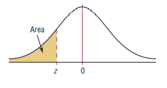

If there is one prayer that you should pray/sing every day and every hour, it is the
LORD's prayer (Our FATHER in Heaven prayer)
- Samuel Dominic Chukwuemeka
It is the most powerful prayer.
A pure heart, a clean mind, and a clear conscience is necessary for it.
For in GOD we live, and move, and have our being.
- Acts 17:28
The Joy of a Teacher is the Success of his Students.
- Samuel Chukwuemeka
Probability Distributions

I greet you this day,
First: read the notes.
Second: view the videos.
Third: solve the questions/solved examples.
Fourth: check your solutions with my thoroughly-explained solutions.
Fourth: check your solutions with the calculators.
Comments, ideas, areas of improvement, questions, and constructive criticisms are welcome.
You may contact me.
If you are my student, please do not contact me here. Contact me via the school's system.
Thank you for visiting.
Samuel Dominic Chukwuemeka (Samdom For Peace)
B.Eng., A.A.T, M.Ed., M.S
Objectives
Students will:
(1.) Define a random variable.
(2.) List the types of a random variable.
(3.) Define a probability distribution.
(4.) Solve applied problems on probability distribution.
(5.) Discuss the uniform probability distribution.
(6.) Solve applied problems on uniform distribution.
(7.) Discuss the Binomial probability distribution.
(8.) Read the Binomial Distribution Table.
(9.) Solve applied problems on Binomial distribution.
(10.) Discuss the Poisson probability distribution.
(11.) Read the Poisson Distribution Table.
(12.) Solve applied problems on Poisson distribution.
(13.) Discuss the Normal probability distribution.
(14.) Read the different kinds of Normal Distribution Tables based on the shaded areas.
(15.) Discuss the Empirical Rule
(16.) Discuss the Central Limit Theorem.
(17.) Solve applied problems on Normal distribution.
(18.) Approximate the Binomial distribution using the Normal distribution.
(19.) Discuss the Geometric probability distribution.
(20.) Solve applied problems on Geometric distribution.
(21.) Discuss the Hypergeometric probability distribution.
(22.) Solve applied problems on Hypergeometric distribution.
(23.) Discuss Cheybyshev's Theorem.
(24.) Solve applied problems on Cheybyshev's Theorem.
(25.) Solve probability distribution problems using technology including the Texas Instruments (TI)
calculators and Pearson Statcrunch among others.
Skills Measured/Acquired
(1.) Use of prior knowledge
(2.) Critical Thinking
(3.) Interdisciplinary connections/applications
(4.) Technology
(5.) Active participation through direct questioning
(6.) Research
Prerequisite Topics
It is highly recommended that you have some prior knowledge of these prerequisite topics.
(1.) Descriptive Statistics
(2.) Probability
(3.) Combinatorics
Vocabulary Words
variable, random variable, discrete random variable, continuous random variable, outcome, mean, expected value, probability, probability distribution,
Symbols, Meanings, and Formulas
Symbols and Meanings
$\Sigma$ pronounced as uppercase Sigma = summation
$k$ = any integer greater than 1
$k$ = number of standard deviations of the mean
$x$ = random variable
$P(x)$ = probability of the random variable, $x$
$\mu$ = mean of the random variable (or the expected value)
$E$ = expected value (or the mean)
$\sigma$ = standard deviation of the random variable
$min$ = minimum data value
$max$ = maximum data value
$n$ = sample size
$N$ = population size
$x_1$ = first value of the variable
$x_2$ = second value of the variable
$n$ = number of independent trials
$p$ = probability of success
$q$ = probability of failure
$z$ = z-score
$z_1$ = first value of the z-score
$z_2$ = second value of the z-score
$P(z)$ = probability of the z-score
$pdf$ = probability distribution function
$n!$ is read as $n-factorial$
The number of combinations of $n$ total items taking $x$ items at a time is $^nC_x \;\;\;or\;\;\; _nC_x \;\;\;or\;\;\; C(n, x) \;\;\;or\;\;\; \displaystyle{\binom{n}{x}}$
Formulas
$
\boldsymbol{Probability\;\;Distribution} \\[3ex]
(1.)\;\;\mu = \Sigma[x * P(x)] \\[3ex]
(2.)\;\;E = \Sigma[x * P(x)] \\[3ex]
(3.)\;\; \sigma = \sqrt{\Sigma[x^2 * P(x)] - \mu^2} \\[7ex]
\boldsymbol{Combinatorics} \\[3ex]
(1.)\:\: 0! = 1 \\[3ex]
(2.)\:\: n! = n * (n - 1) * (n - 2) * (n - 3) * ... * 1 \\[3ex]
(3.)\;\; n! = n * (n - 1)! \\[3ex]
(4.)\;\; n! = (n - 1) * (n - 2)!...among\;\;others \\[3ex]
(5.)\:\: C(n, x) = \dfrac{n!}{(n - x)!x!} \\[5ex]
(6.)\;\; C(n, x) = C(n, n - x) \\[7ex]
\boldsymbol{Binomial\;\;Distribution} \\[3ex]
(1.)\;\; p + q = 1 \\[3ex]
(2.)\;\; \mu = n * p \\[3ex]
(3.)\;\; \sigma = \sqrt{n * p * q} \\[4ex]
(4.)\;\; P(x) = C(n, x) * p^x * q^{n - x} \\[7ex]
\boldsymbol{Poisson\;\;Distribution} \\[3ex]
(1.)\;\;P(x) = \dfrac{\mu^x * e^{-\mu}}{x!} \\[5ex]
(2.)\;\; \mu = \sigma^2 \\[7ex]
\boldsymbol{Normal\;\;Distribution} \\[3ex]
(1.)\;\; z = \dfrac{x - \bar{x}}{s} \\[5ex]
(2.)\;\; x = \bar{x} + zs \\[3ex]
(3.)\;\; z = \dfrac{x - \mu}{\sigma} \\[5ex]
(4.)\;\; x = \mu + z\sigma \\[3ex]
$
Empirical Rule (68 - 95 - 99.7 percent Rule)
(Applies only to Normal Distribution)
(a.) 68% of the data lie within (below and above) 1 standard deviation of the mean
(b.) 95% of the data lie within (below and above) 2 standard deviations of the mean
(c.) 99.7% of the data lie within (below and above) 3 standard deviations of the mean
Pafnuty Chebyshev's Theorem
(Applies to any distribution)
At least $\left(1 - \dfrac{1}{k^2}\right) * 100$ % of the data lie within $k$ standard deviations of the mean
implies
At least $\left(1 - \dfrac{1}{k^2}\right) * 100$ % of the data lie within $\mu - k\sigma$ and $\mu + k\sigma$
Range Rule of Thumb
Minimum Usual Value = μ - 2σ
Maximum Usual Value = μ + 2σ
A data value is unusual if it is less than the minimum usual value or greater than the maximum usual value
z-score Boundary
A data value is usual if $-2.00 \lt z-score \lt 2.00$
A data value is unusual if $z-score \lt -2.00$ or if $z-score \gt 2.00$
Definitions
A random variable is a numerical value assigned to an outcome of a random experiment.
A discrete random variable has a finite number of possible values.
A continuous random variable has an infinite number of possible values within a specific interval.
Continuous variables are numerical variables with outcomes that cannot be listed or counted because
they occur over a range.
Introduction
A random variable is a numerical value assigned to an outcome of a random experiment.
It is denoted by X
It could be a discrete random variable or a continuous random variable.
A discrete random variable has a finite number of possible values.
If you can count it, it is discrete
Examples are:
(a.) the number of students in Mr. C's Statistics class
(b.) the number of goals scored during a soccer match
(c.) the number of visitors to Mr. C's websites; etc.
The mean value of the outcomes of a discrete random variable is the expected value of the discrete random value.
A continuous random variable has an infinite number of possible values within a specific interval.
If you can measure it, it is continuous
Example are:
(a.) the amount of ice at Geneva Lake in Wisconsin during the Winterfest celebration in 2016
(b.) the temperature of Boston in 2018 during the polar vortex hazard
(c.) the time it takes to fly from the City of Truth and Consequences, New Mexico to the City of Surprise, Arizona
(d.) the average weight of an adult female lion
(e.) the height of the tallest basketball player in the NBA; among others.
Usual and Unusual Events
In general; if the probability of an event is at least $5\%$ ($0.05$ or more), the event is usual.
In general (but depending on the situation); if the probability of an event is less than $5\%$ (less than $0.05$),
the event is
unusual.
What situation does this depend?
For example: In a life and death situation where a defendant is to be sentenced if guilty or released if innocent;
the jurors need to be $\underline{100\%}$ certain of any decision they make. If the jurors are $96\%$ certain
that the defendant is guilty, this means that the probability that the defendant is not guilty is $4\%$ (less than
$5\%$). According to the $5\%$ rule, this implies that it is not usual that the defendant is not guilty.
But, what if the defendant is innocent? In this case that involves life or death, the event is not unusual.
LIFE IS PRECIOUS!!!
Probability Distribution
A probability distribution indicates the possible outcomes of a random experiment and the probability
of occurrence of each outcome.
Discrete probability distributions are represented by equations, tables, and graphs.
Continuous probability distributions are represented by areas under curves.
The total area under a probability density curve is 1, because it represents the probability that the
outcome will be somewhere on the x-axis.
Binomial Distribution
Requirements for a Binomial Probability Distribution
(1.) The event has a fixed number of trials.
(2.) The trials are independent.
(3.) The outcome of each trial is either a success or a failure.
(4.) The probability of a success or failure in any one trial is the same as the probability of success or failure in all the trials.
Normal Distribution
The Normal Probability Distribution is the probability distribution that is used to model the probability of a continuous random
variable.
Introduced by Carl Gauss, it is also known as the Gaussian Distribution
Some applications of normal distribution are seen in variables such as the shoe sizes of the students at Georgia Northwestern
Technical College (GNTC); the heights of the students at Arizona Western College (AWC); and the Intelligence Quotience (IQ) scores
of the population of the residents of the Village of Waterproof, Louisiana among others.
Properties of the Normal Distribution Curve (Normal Curve or Normal Probability Distribution)
(1.) It is a bell-shaped curve.
(2.) The total area under the normal curve is 100%
or
The total probability under the normal curve is 1
or
The total relative frequency under the normal curve is 100% or 1
(3.) It is symmetric about the mean.
The mean is the center of the normal distribution.
Being symmetric about the mean implies that the area under the curve to the left of the mean is equal to the area under the curve to
the right of the mean.
(4.) The mean, median, and mode of a normal curve is the same.
Because of this property, it has a single highest peak that occurs at the mean: $x = \mu$
In other words, the highest peak of the normal curve occurs where the value of the variable is equal to the mean of the
distribution.
(5.) As the variable increases without bounds (gets larger and larger), or decreases without bounds (gets smaller and smaller); the
normal curve approaches but never touches the horizontal axis.
(6.) The Empirical Rule:
(a.) About 68% of the curve lie within 1 standard deviation from the mean
In other words, about 68% of the curve lie between $\mu - 1\sigma$ and $\mu + 1\sigma$
(b.) About 95% of the curve lie within 2 standard deviations from the mean
In other words, about 95% of the curve lie between $\mu - 2\sigma$ and $\mu + 2\sigma$
(c.) About 99.7% of the curve lie within 3 standard deviations from the mean
In other words, about 99.7% of the curve lie between $\mu - 3\sigma$ and $\mu + 3\sigma$
(7.) The most widely used probability model for continuous numerical variables is the normal distribution.
(8.) The normal probability model is unimodal and symmetric, so if a dataset is suspected to be unimodal and symmetric, the normal probability model is a good model for
such dataset.
(9.) The exact shape of the normal distribution is determined by the mean and the standard deviation.
(10.) The normal curve has inflection points at one standard deviation from the mean: between $\mu - 1\sigma$ and $\mu + 1\sigma$
This implies that the inflection points are found: one standard deviation below the mean and one standard deviation above the mean.
The Standard Normal Distribution
(1.) This is also known as the z-distribution or the unit normal distribution.
(2.) The mean of the standard normal curve is 0
(3.) The standard deviation of the standard normal curve is 1
Let us read the normal distribution tables.
The most common table is the table where some area under the curve is shaded to the left
But some professors provide students with the table where some area under the curve is shaded in the center
It is not uncommon to see a table where some area under the curve is shaded to the right
All three kinds of tables are read differently, though they should all lead to the same answer if used to solve the same question.
Print each kind of table and teach students how to read them.
Using some questions, use each table to find the same answers to those questions.
Tables



References
Chukwuemeka, S.D (2016, February 25). Samuel Chukwuemeka Tutorials - Math, Science, and Technology.
Retrieved from https://www.samuelchukwuemeka.com
Black, Ken. (2012). Business Statistics for Contemporary Decision Making (7th ed.).
New Jersey: Wiley
Gould, R., & Ryan, C. (2016). Introductory Statistics: Exploring the world through data (2nd ed.). Boston:
Pearson
Gould, R., Wong, R., & Ryan, C. N. (2020). Introductory Statistics: Exploring the world through data (3rd ed.). Pearson.
Kozak, Kathryn. (2015). Statistics Using Technology (2nd ed.).
OpenStax, Introductory Statistics.OpenStax CNX. Sep 28, 2016.
Retrieved from https://cnx.org/contents/30189442-6998-4686-ac05-ed152b91b9de@18.12
Sullivan, M., & Barnett, R. (2013). Statistics: Informed decisions using data with an introduction to mathematics of finance
(2nd custom ed.). Boston: Pearson Learning Solutions.
Triola, M. F. (2015). Elementary Statistics using the TI-83/84 Plus Calculator
(5th ed.). Boston: Pearson
Triola, M. F. (2022). Elementary Statistics. (14th ed.) Hoboken: Pearson.
Weiss, Neil A. (2015). Elementary Statistics (9th ed.). Boston: Pearson
TI Products | Calculators and Technology | Texas Instruments. (n.d.). Education.ti.com. Retrieved March 18, 2023, from https://education.ti.com/en/products
CrackACT. (n.d.). Retrieved from http://www.crackact.com/act-downloads/
Free Jamb Past Questions And Answer For All Subject 2020. (2020, January 31). Vastlearners.
https://www.vastlearners.com/free-jamb-past-questions/
GCSE Exam Past Papers: Revision World. Retrieved April 6, 2020, from
https://revisionworld.com/gcse-revision/gcse-exam-past-papers
HSC exam papers | NSW Education Standards. (2019). Nsw.edu.au.
https://educationstandards.nsw.edu.au/wps/portal/nesa/11-12/resources/hsc-exam-papers
NSC Examinations. (n.d.). www.education.gov.za.
https://www.education.gov.za/Curriculum/NationalSeniorCertificate(NSC)Examinations.aspx
West African Examinations Council (WAEC). Retrieved May 30, 2020, from
https://waeconline.org.ng/e-learning/Mathematics/mathsmain.html
Binomial Distribution Table: https://uwf.edu/media/university-of-west-florida/colleges/cse/departments/mathematics-and-statistics/documents/student-resources/Binomial-Tables-1.pdf
Poisson Distribution Table: http://faculty.wwu.edu/auer/DSCI205/bbs-e12-POIS.pdf
Normal Distribution Table (Left Shaded Area): https://www.math.arizona.edu/~rsims/ma464/standardnormaltable.pdf
Normal Distribution Table (Center Shaded Area): https://itl.nist.gov/div898/handbook/eda/section3/eda3671.htm
51 Real SAT PDFs and List of 89 Real ACTs (Free) : McElroy Tutoring. (n.d.).
Mcelroytutoring.com. Retrieved December 12, 2022,
from https://mcelroytutoring.com/lower.php?url=44-official-sat-pdfs-and-82-official-act-pdf-practice-tests-free